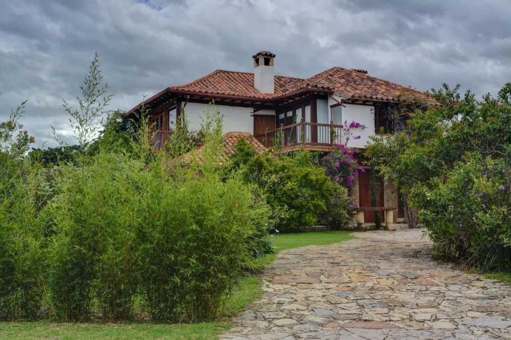
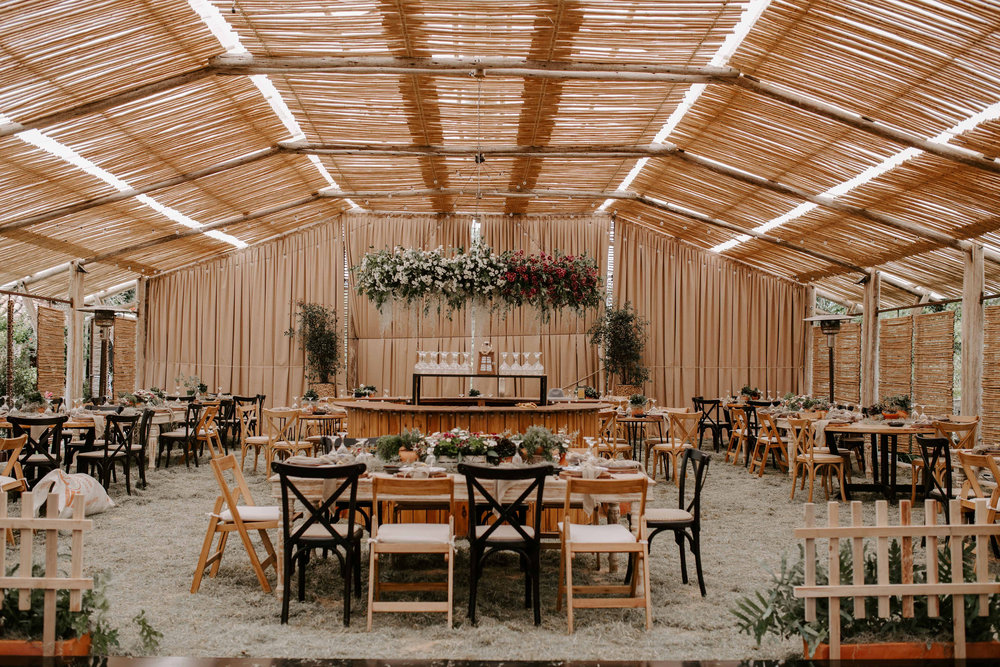
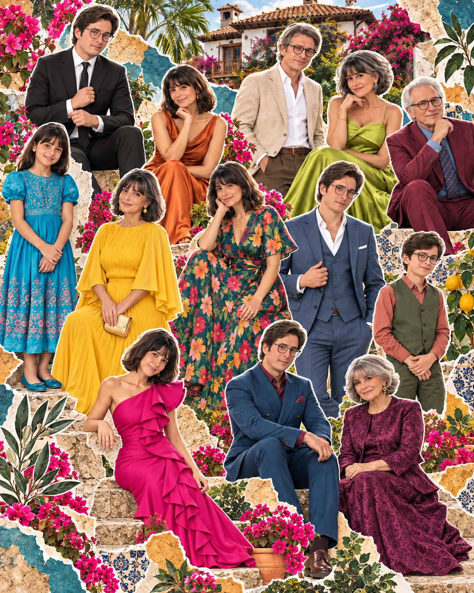

NOS CASAMOS
Katherine&Francisco
ENERO092027
Villa de Leyva
COLOMBIA
Queremos celebrar este día
tan especial contigo.
¡Te esperamos con mucha ilusión!
PARA TI. DE CORAZÓN.
NOS CASAMOS
ENERO092027
Villa de Leyva
COLOMBIA
Queremos celebrar este día
tan especial contigo.
¡Te esperamos con mucha ilusión!
9 DE ENERO DE 2027
Del primer abrazo al último baile.
SÁBADO · CASA ANTARES
Les damos la bienvenida.
Nuestro sí para toda la vida.
Para disfrutar y brindar juntos.
Hora de despedirnos.
Toma el borde de abajo y levántalo.
AQUÍ CELEBRAMOS
Un lugar especial para un día muy especial.



Fotos: Fincas de la Villa · Bodas en Villa de Leyva / Laura Rincón
Nuestra boda será en Casa Antares, muy cerca de Villa de Leyva: una casona colonial rodeada de jardines y mucho verde. Allí queremos recibirlos, celebrar y vivir juntos un día inolvidable.
Villa de Leyva es uno de los pueblos más bellos de Colombia, y en sus alrededores hay mucho por descubrir. Quizás quieran aprovechar la boda para quedarse unos días, explorar y disfrutar.
CÓMO LLEGAR
PARA TENER EN CUENTA
En Villa de Leyva el clima es templado y muy agradable. De día pueden esperar unos 22 °C; de noche refresca bastante, con alrededor de 12 °C.
Temperaturas aproximadas, como referencia.
Traigan algo abrigado para ponerse encima. Por la noche también tendremos calentadores de exterior.
CÓDIGO DE VESTIMENTA
Bien vestidos, pero con comodidad.

Su presencia ya es un regalo enorme que nos llena de alegría. Por favor, nada que no quepa en un sobre pequeño.
Cuéntennos si nos acompañarán.
En el correo también pueden contarnos qué no comen y todo lo que debamos saber.
El correo es solo una opción: también pueden escribirnos directamente por chat.